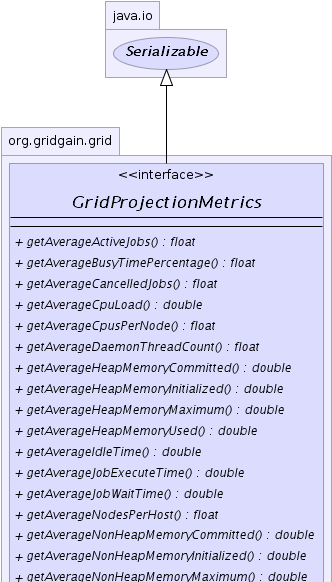
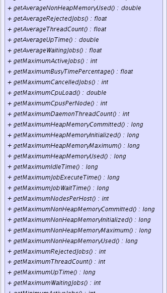
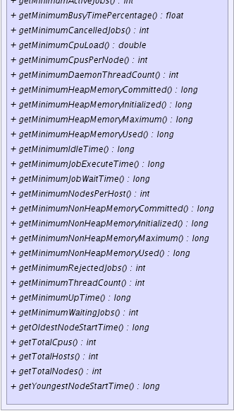

|
|

|

|
|

|

|

|
GridGain™ 4.0.0c
Community Edition |
|||||||||
| PREV CLASS NEXT CLASS | FRAMES NO FRAMES | |||||||||
| SUMMARY: NESTED | FIELD | CONSTR | METHOD | DETAIL: FIELD | CONSTR | METHOD | |||||||||
public interface GridProjectionMetrics
This interface defines cumulative metrics for the projection. Projection metrics are
defined as combined total, min, max, and average measurements from participating nodes'
metrics. Projection metrics are obtained by calling GridProjection.projectionMetrics()
method.
Note that these metrics already represent the current snapshot and can change from call to call. If projection is dynamic the metrics snapshot will also change with changes in participating nodes.
| Wiki | |
| Forum |
GridNodeMetrics,
GridProjection.projectionMetrics()
|  |
|  |
|  |
| Method Summary | |
|---|---|
float |
getAverageActiveJobs()
Gets average number of active jobs that concurrently run nodes in the projection. |
float |
getAverageBusyTimePercentage()
Gets average busy time for nodes in the projection. |
float |
getAverageCancelledJobs()
Gets average number of cancelled jobs that concurrently run nodes in the projection. |
double |
getAverageCpuLoad()
Gets average CPU load for nodes in the projection. |
float |
getAverageCpusPerNode()
Gets average number of available processors for nodes in the projection. |
float |
getAverageDaemonThreadCount()
Gets average number of daemon threads for nodes in the projection. |
double |
getAverageHeapMemoryCommitted()
Gets average amount of committed heap memory for nodes in the projection. |
double |
getAverageHeapMemoryInitialized()
Gets average amount of initialized heap memory for nodes in the projection. |
double |
getAverageHeapMemoryMaximum()
Gets minimum amount of maximum heap memory for nodes in the projection. |
double |
getAverageHeapMemoryUsed()
Gets average amount of used heap memory for nodes in the projection. |
double |
getAverageIdleTime()
Gets average idle time for nodes in the projection. |
double |
getAverageJobExecuteTime()
Gets average job execution time for nodes in the projection. |
double |
getAverageJobWaitTime()
Gets average job wait time for nodes in the projection. |
float |
getAverageNodesPerHost()
Gets average number of nodes per host. |
double |
getAverageNonHeapMemoryCommitted()
Gets average amount of committed non-heap memory for nodes in the projection. |
double |
getAverageNonHeapMemoryInitialized()
Gets average amount of initialized non-heap memory for nodes in the projection. |
double |
getAverageNonHeapMemoryMaximum()
Gets average amount of maximum non-heap memory for nodes in the projection. |
double |
getAverageNonHeapMemoryUsed()
Gets average amount of used non-heap memory for nodes in the projection. |
float |
getAverageRejectedJobs()
Gets average number of rejected jobs that concurrently run nodes in the projection. |
float |
getAverageThreadCount()
Gets average number of threads for nodes in the projection. |
double |
getAverageUpTime()
Gets average up time for nodes in the projection. |
float |
getAverageWaitingJobs()
Gets average number of waiting jobs that concurrently run nodes in the projection. |
float |
getIdleTimePercentage()
Gets percentage of time nodes in this projection are idling vs. executing jobs. |
int |
getMaximumActiveJobs()
Gets maximum number of active jobs that concurrently run on nodes in the projection. |
float |
getMaximumBusyTimePercentage()
Gets maximum busy time for nodes in the projection. |
int |
getMaximumCancelledJobs()
Gets maximum number of cancelled jobs that concurrently run on nodes in the projection. |
double |
getMaximumCpuLoad()
Gets maximum CPU load for nodes in the projection. |
int |
getMaximumCpusPerNode()
Gets maximum number of available processors for nodes in the projection. |
int |
getMaximumDaemonThreadCount()
Gets maximum number of daemon threads for nodes in the projection. |
long |
getMaximumHeapMemoryCommitted()
Gets maximum amount of committed heap memory for nodes in the projection. |
long |
getMaximumHeapMemoryInitialized()
Gets maximum amount of initialized heap memory for nodes in the projection. |
long |
getMaximumHeapMemoryMaximum()
Gets maximum amount of maximum heap memory for nodes in the projection. |
long |
getMaximumHeapMemoryUsed()
Gets maximum amount of used heap memory for nodes in the projection. |
long |
getMaximumIdleTime()
Gets maximum idle time for nodes in the projection. |
long |
getMaximumJobExecuteTime()
Gets maximum job execution time for nodes in the projection. |
long |
getMaximumJobWaitTime()
Gets maximum job wait time for nodes in the projection. |
int |
getMaximumNodesPerHost()
Gets maximum number of nodes per host. |
long |
getMaximumNonHeapMemoryCommitted()
Gets maximum amount of committed non-heap memory for nodes in the projection. |
long |
getMaximumNonHeapMemoryInitialized()
Gets maximum amount of initialized non-heap memory for nodes in the projection. |
long |
getMaximumNonHeapMemoryMaximum()
Gets maximum amount of maximum non-heap memory for nodes in the projection. |
long |
getMaximumNonHeapMemoryUsed()
Gets maximum amount of used non-heap memory for nodes in the projection. |
int |
getMaximumRejectedJobs()
Gets maximum number of rejected jobs that concurrently run on nodes in the projection. |
int |
getMaximumThreadCount()
Gets maximum number of threads for nodes in the projection. |
long |
getMaximumUpTime()
Gets maximum up time for nodes in the projection. |
int |
getMaximumWaitingJobs()
Gets maximum number of waiting jobs that concurrently run on nodes in the projection. |
int |
getMinimumActiveJobs()
Gets minimum number of active jobs that concurrently run on nodes in the projection. |
float |
getMinimumBusyTimePercentage()
Gets minimum busy time for nodes in the projection. |
int |
getMinimumCancelledJobs()
Gets minimum number of cancelled jobs that concurrently run on nodes in the projection. |
double |
getMinimumCpuLoad()
Gets minimum CPU load for nodes in the projection. |
int |
getMinimumCpusPerNode()
Gets minimum number of available processors for nodes in the projection. |
int |
getMinimumDaemonThreadCount()
Gets minimum number of daemon threads for nodes in the projection. |
long |
getMinimumHeapMemoryCommitted()
Gets minimum amount of committed heap memory for nodes in the projection. |
long |
getMinimumHeapMemoryInitialized()
Gets minimum amount of initialized heap memory for nodes in the projection. |
long |
getMinimumHeapMemoryMaximum()
Gets minimum amount of maximum heap memory for nodes in the projection. |
long |
getMinimumHeapMemoryUsed()
Gets minimum amount of used heap memory for nodes in the projection. |
long |
getMinimumIdleTime()
Gets minimum idle time for nodes in the projection. |
long |
getMinimumJobExecuteTime()
Gets minimum job execution time for nodes in the projection. |
long |
getMinimumJobWaitTime()
Gets minimum job wait time for nodes in the projection. |
int |
getMinimumNodesPerHost()
Gets minimum number of nodes per host. |
long |
getMinimumNonHeapMemoryCommitted()
Gets minimum amount of committed non-heap memory for nodes in the projection. |
long |
getMinimumNonHeapMemoryInitialized()
Gets minimum amount of initialized non-heap memory for nodes in the projection. |
long |
getMinimumNonHeapMemoryMaximum()
Gets minimum amount of maximum non-heap memory for nodes in the projection. |
long |
getMinimumNonHeapMemoryUsed()
Gets minimum amount of used non-heap memory for nodes in the projection. |
int |
getMinimumRejectedJobs()
Gets minimum number of rejected jobs that concurrently run on nodes in the projection. |
int |
getMinimumThreadCount()
Gets minimum number of threads for nodes in the projection. |
long |
getMinimumUpTime()
Gets minimum up time for nodes in the projection. |
int |
getMinimumWaitingJobs()
Gets minimum number of waiting jobs that concurrently run on nodes in the projection. |
long |
getOldestNodeStartTime()
Gets start time of the oldest node in the projection. |
int |
getTotalCpus()
Gets total number of available processors. |
int |
getTotalHosts()
Gets total number of hosts. |
int |
getTotalNodes()
Gets total number of nodes. |
long |
getYoungestNodeStartTime()
Gets start time of the youngest node in the projection. |
| Method Detail |
|---|
int getMinimumActiveJobs()
int getMaximumActiveJobs()
float getAverageActiveJobs()
int getMinimumCancelledJobs()
int getMaximumCancelledJobs()
float getAverageCancelledJobs()
int getMinimumRejectedJobs()
int getMaximumRejectedJobs()
float getAverageRejectedJobs()
int getMinimumWaitingJobs()
int getMaximumWaitingJobs()
float getAverageWaitingJobs()
long getMinimumJobExecuteTime()
long getMaximumJobExecuteTime()
double getAverageJobExecuteTime()
long getMinimumJobWaitTime()
long getMaximumJobWaitTime()
double getAverageJobWaitTime()
int getMinimumDaemonThreadCount()
int getMaximumDaemonThreadCount()
float getAverageDaemonThreadCount()
int getMinimumThreadCount()
int getMaximumThreadCount()
float getAverageThreadCount()
long getMinimumIdleTime()
long getMaximumIdleTime()
double getAverageIdleTime()
float getIdleTimePercentage()
1 and greater than or equal to 0).float getMinimumBusyTimePercentage()
float getMaximumBusyTimePercentage()
float getAverageBusyTimePercentage()
double getMinimumCpuLoad()
double getMaximumCpuLoad()
double getAverageCpuLoad()
[0, 1] range.long getMinimumHeapMemoryCommitted()
long getMaximumHeapMemoryCommitted()
double getAverageHeapMemoryCommitted()
long getMinimumHeapMemoryUsed()
long getMaximumHeapMemoryUsed()
double getAverageHeapMemoryUsed()
long getMinimumHeapMemoryMaximum()
long getMaximumHeapMemoryMaximum()
double getAverageHeapMemoryMaximum()
long getMinimumHeapMemoryInitialized()
long getMaximumHeapMemoryInitialized()
double getAverageHeapMemoryInitialized()
long getMinimumNonHeapMemoryCommitted()
long getMaximumNonHeapMemoryCommitted()
double getAverageNonHeapMemoryCommitted()
long getMinimumNonHeapMemoryUsed()
long getMaximumNonHeapMemoryUsed()
double getAverageNonHeapMemoryUsed()
long getMinimumNonHeapMemoryMaximum()
long getMaximumNonHeapMemoryMaximum()
double getAverageNonHeapMemoryMaximum()
long getMinimumNonHeapMemoryInitialized()
long getMaximumNonHeapMemoryInitialized()
double getAverageNonHeapMemoryInitialized()
long getYoungestNodeStartTime()
long getOldestNodeStartTime()
long getMinimumUpTime()
long getMaximumUpTime()
double getAverageUpTime()
int getMinimumCpusPerNode()
int getMaximumCpusPerNode()
float getAverageCpusPerNode()
int getMinimumNodesPerHost()
int getMaximumNodesPerHost()
float getAverageNodesPerHost()
int getTotalCpus()
int getTotalHosts()
int getTotalNodes()
|
GridGain™ 4.0.0c
Community Edition |
|||||||||
| PREV CLASS NEXT CLASS | FRAMES NO FRAMES | |||||||||
| SUMMARY: NESTED | FIELD | CONSTR | METHOD | DETAIL: FIELD | CONSTR | METHOD | |||||||||
|
GridGain - Real Time Big Data
|
|
|
|